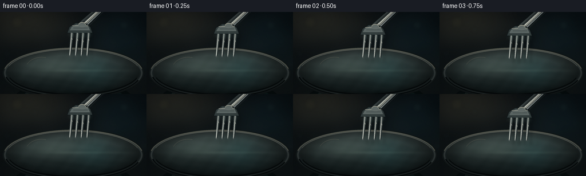
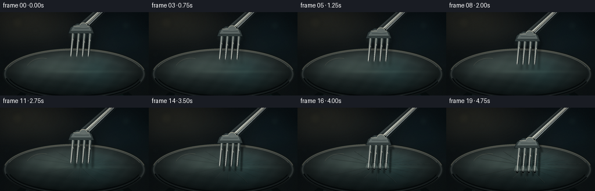
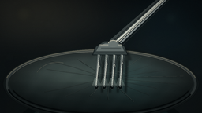
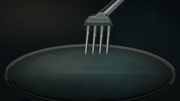
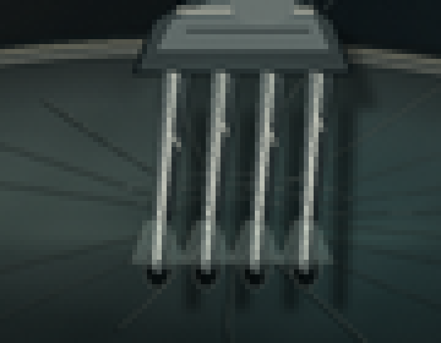
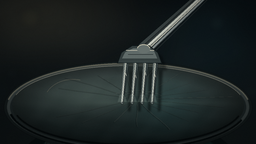

CODING AGENTS AS PIXEL WORLD MODELS
traex/DeepSeek-V4.1-Flash · phygen_023
点击播放 · 原生 RGB 像素
逐轮保存的候选
回放视频、检查图与代码变化。
每份候选均可单独播放。实际图片检查记录在下方工具轨迹中。
候选 01播放与检查图
点击播放 · 原生 RGB 像素


展开代码变化
--- 上一保存版本
+++ 本次保存版本
@@ -0,0 +1,444 @@
+from pathlib import Path
+import math
+
+import numpy as np
+from PIL import Image, ImageDraw, ImageFilter
+
+import artifact_io
+
+
+W, H = 256, 144
+SS = 4
+FW, FH = W * SS, H * SS
+N = 20
+ROOT = Path(__file__).resolve().parent
+
+
+def s(value):
+ return int(round(value * SS))
+
+
+def smoothstep(a, b, x):
+ x = np.clip((x - a) / (b - a), 0.0, 1.0)
+ return x * x * (3.0 - 2.0 * x)
+
+
+def rgba(color, alpha=255):
+ return tuple(int(v) for v in color) + (int(alpha),)
+
+
+def mix(a, b, t):
+ return tuple(int(round(a[i] * (1.0 - t) + b[i] * t)) for i in range(3))
+
+
+def ellipse_mask(cx, cy, rx, ry):
+ yy, xx = np.mgrid[0:FH, 0:FW]
+ return ((xx / SS - cx) / rx) ** 2 + ((yy / SS - cy) / ry) ** 2 <= 1.0
+
+
+def bezier(p0, p1, p2, n=24):
+ t = np.linspace(0.0, 1.0, n)[:, None]
+ p = (1 - t) ** 2 * np.asarray(p0) + 2 * (1 - t) * t * np.asarray(p1) + t**2 * np.asarray(p2)
+ return [tuple(v) for v in p]
+
+
+def scaled(points):
+ return [(s(x), s(y)) for x, y in points]
+
+
+def render_background():
+ yy, xx = np.mgrid[0:FH, 0:FW]
+ x = xx / FW
+ y = yy / FH
+
+ top = np.array([12, 18, 23], dtype=np.float32)
+ bottom = np.array([24, 33, 35], dtype=np.float32)
+ image = top[None, None, :] * (1.0 - y[..., None]) + bottom[None, None, :] * y[..., None]
+
+ # Soft studio falloff and a restrained warm practical light at upper left.
+ glow = np.exp(-(((x - 0.16) / 0.34) ** 2 + ((y - 0.08) / 0.30) ** 2))
+ warm = np.array([46, 42, 30], dtype=np.float32)
+ image += glow[..., None] * warm
+ rim_glow = np.exp(-(((x - 0.84) / 0.24) ** 2 + ((y - 0.25) / 0.42) ** 2))
+ image += rim_glow[..., None] * np.array([6, 16, 18], dtype=np.float32)
+
+ # Very low-frequency texture keeps the defocused background from looking flat.
+ texture = (
+ np.sin(x * 17.0 + y * 5.0) * 0.45
+ + np.sin(x * 31.0 - y * 9.0 + 1.4) * 0.22
+ + np.sin(x * 7.0 + y * 22.0) * 0.33
+ )
+ image += texture[..., None] * 2.2
+ image = np.clip(image, 0, 255).astype(np.uint8)
+ base = Image.fromarray(image, "RGB").convert("RGBA")
+
+ bokeh = Image.new("RGBA", (FW, FH), (0, 0, 0, 0))
+ draw = ImageDraw.Draw(bokeh)
+ circles = [
+ (30, 18, 10, (112, 105, 72, 32)),
+ (61, 32, 5, (88, 104, 92, 25)),
+ (217, 23, 8, (74, 116, 117, 28)),
+ (236, 52, 4, (89, 132, 126, 22)),
+ (184, 12, 3, (154, 132, 89, 20)),
+ (12, 73, 6, (56, 81, 81, 18)),
+ (250, 92, 7, (55, 78, 80, 17)),
+ ]
+ for cx, cy, radius, color in circles:
+ draw.ellipse(
+ (s(cx - radius), s(cy - radius), s(cx + radius), s(cy + radius)),
+ fill=color,
+ )
+ bokeh = bokeh.filter(ImageFilter.GaussianBlur(s(3.2)))
+ base.alpha_composite(bokeh)
+
+ # A shallow, dark glass vessel supports the film and grounds the composition.
+ vessel = Image.new("RGBA", (FW, FH), (0, 0, 0, 0))
+ vd = ImageDraw.Draw(vessel)
+ vd.ellipse((s(2), s(111), s(254), s(283)), fill=(11, 23, 25, 255))
+ vd.ellipse((s(16), s(117), s(240), s(271)), fill=(20, 47, 47, 220))
+ vd.ellipse((s(35), s(121), s(221), s(252)), fill=(10, 30, 31, 230))
+ # Broad reflected light down the glass wall.
+ for i, alpha in enumerate((18, 15, 11, 7)):
+ vd.ellipse(
+ (s(41 + i * 3), s(120 + i * 2), s(102 + i * 3), s(216 + i * 3)),
+ outline=(105, 139, 126, alpha),
+ width=s(2.2),
+ )
+ vessel = vessel.filter(ImageFilter.GaussianBlur(s(0.45)))
+ base.alpha_composite(vessel)
+
+ # Rim: a dark ceramic/metal lip with a narrow lit inner edge.
+ rim = Image.new("RGBA", (FW, FH), (0, 0, 0, 0))
+ rd = ImageDraw.Draw(rim)
+ rd.ellipse((s(4), s(61), s(252), s(153)), fill=(28, 38, 39, 255))
+ rd.ellipse((s(7), s(64), s(249), s(150)), fill=(76, 88, 87, 255))
+ rd.ellipse((s(10), s(67), s(246), s(147)), fill=(39, 51, 52, 255))
+ rd.ellipse((s(13), s(70), s(243), s(144)), fill=(15, 27, 29, 255))
+ rd.arc((s(6), s(63), s(250), s(151)), 190, 350, fill=(190, 188, 163, 185), width=s(1.2))
+ rd.arc((s(8), s(64), s(248), s(150)), 18, 170, fill=(7, 14, 16, 230), width=s(2.2))
+ rim = rim.filter(ImageFilter.GaussianBlur(s(0.22)))
+ base.alpha_composite(rim)
+
+ return base
+
+
+def render_film(base, deformation):
+ yy, xx = np.mgrid[0:FH, 0:FW]
+ x = xx / SS
+ y = yy / SS
+ nx = (x - 128.0) / 116.0
+ ny = (y - 106.0) / 40.0
+ r = np.sqrt(nx**2 + ny**2)
+ mask = r <= 1.0
+
+ # A taut, translucent sheet over the dark vessel.
+ c0 = np.array([24, 38, 39], dtype=np.float32)
+ c1 = np.array([78, 92, 90], dtype=np.float32)
+ vertical = np.clip((ny + 1.0) * 0.5, 0, 1)
+ rgb = c1[None, None, :] * (1.0 - vertical[..., None]) + c0[None, None, :] * vertical[..., None]
+
+ broad = np.exp(-(((nx + 0.30) / 0.46) ** 2 + ((ny + 0.25) / 0.42) ** 2))
+ rgb += broad[..., None] * np.array([36, 42, 38], dtype=np.float32)
+ cyan = np.exp(-(((nx - 0.32) / 0.30) ** 2 + ((ny + 0.10) / 0.70) ** 2))
+ rgb += cyan[..., None] * np.array([8, 24, 25], dtype=np.float32)
+
+ waves = (
+ np.sin(nx * 24.0 + ny * 7.0) * 1.6
+ + np.sin(nx * 8.0 - ny * 19.0 + 0.7) * 1.3
+ + np.sin(nx * 42.0 + ny * 12.0) * 0.6
+ )
+ rgb += waves[..., None]
+
+ # The contact region reflects less sky and becomes a dark, pinched bowl.
+ contact = np.exp(-(((x - 137.0) / (14.0 + 3.0 * deformation)) ** 2 + ((y - 101.0) / 7.5) ** 2))
+ rgb -= contact[..., None] * np.array([22, 24, 23], dtype=np.float32) * deformation
+
+ edge = np.clip((r - 0.76) / 0.24, 0, 1)
+ rgb *= (1.0 - 0.30 * edge[..., None])
+ sheen = np.clip(1.0 - np.abs(ny + 0.08) / 0.10, 0, 1) * np.exp(-((nx - 0.20) / 0.55) ** 2)
+ rgb += sheen[..., None] * np.array([16, 18, 15], dtype=np.float32)
+ rgb = np.clip(rgb, 0, 255).astype(np.uint8)
+
+ alpha = np.where(mask, 248, 0).astype(np.uint8)
+ layer = np.dstack((rgb, alpha))
+ film = Image.fromarray(layer, "RGBA")
+ base.alpha_composite(film)
+
+ # A polished inner lip catches a broken line of light.
+ lip = Image.new("RGBA", (FW, FH), (0, 0, 0, 0))
+ ld = ImageDraw.Draw(lip)
+ ld.arc((s(11), s(65), s(245), s(147)), 196, 344, fill=(205, 207, 187, 190), width=s(1.1))
+ ld.arc((s(13), s(67), s(243), s(145)), 15, 166, fill=(5, 12, 14, 225), width=s(1.6))
+ ld.arc((s(44), s(79), s(102), s(124)), 205, 285, fill=(235, 229, 198, 125), width=s(0.8))
+ lip = lip.filter(ImageFilter.GaussianBlur(s(0.24)))
+ base.alpha_composite(lip)
+
+
+def wrinkle_layer(deformation, penetration, frame_index):
+ layer = Image.new("RGBA", (FW, FH), (0, 0, 0, 0))
+ if deformation <= 0.01:
+ return layer
+ draw = ImageDraw.Draw(layer)
+ cx, cy = 136.5, 99.5
+ alpha_scale = 0.50 * deformation + 0.50 * penetration
+ angles = np.linspace(-2.72, 2.55, 17)
+ for i, angle in enumerate(angles):
+ # Leave the immediate fork footprint clear and fan creases into the rim.
+ r0 = 0.10 + 0.035 * (i % 3)
+ r1 = 0.76 + 0.11 * math.sin(i * 1.7)
+ wobble = 0.018 * math.sin(i * 2.13 + frame_index * 0.13)
+ pts = []
+ for u in np.linspace(r0, r1, 18):
+ a = angle + wobble * math.sin(u * math.pi * 2.4 + i)
+ px = cx + math.cos(a) * 112.0 * u
+ py = cy + math.sin(a) * 37.0 * u
+ pts.append((px, py))
+ width = 0.55 + 0.30 * deformation
+ dark_alpha = int(np.clip(40 + 62 * alpha_scale, 0, 105))
+ light_alpha = int(np.clip(30 + 58 * alpha_scale, 0, 92))
+ draw.line(scaled(pts), fill=(9, 17, 18, dark_alpha), width=max(1, s(width)))
+ shifted = [(px + 0.6, py - 0.45) for px, py in pts]
+ draw.line(scaled(shifted), fill=(199, 205, 190, light_alpha), width=max(1, s(0.42)))
+
+ # Concentric stretch rings make the film read as an elastic outer layer.
+ if deformation > 0.15:
+ for k in range(3):
+ rx = 9.0 + k * 7.5 + 4.0 * deformation
+ ry = 3.2 + k * 2.2 + 1.6 * deformation
+ box = (s(cx - rx), s(cy - ry), s(cx + rx), s(cy + ry))
+ draw.arc(box, 200 + k * 7, 344 - k * 5, fill=(209, 218, 207, int(80 * deformation)), width=s(0.55))
+
+ return layer.filter(ImageFilter.GaussianBlur(s(0.18)))
+
+
+def tear_layer(tip_positions, penetration):
+ if penetration <= 0.02:
+ return Image.new("RGBA", (FW, FH), (0, 0, 0, 0))
+ layer = Image.new("RGBA", (FW, FH), (0, 0, 0, 0))
+ draw = ImageDraw.Draw(layer)
+ for i, (tx, ty) in enumerate(tip_positions):
+ # Dark puncture with a stretched, luminous plastic lip.
+ ry = 2.0 + 2.6 * penetration
+ rx = 1.6 + 1.4 * penetration
+ draw.ellipse(
+ (s(tx - rx), s(ty - ry), s(tx + rx), s(ty + ry)),
+ fill=(4, 9, 10, int(185 * penetration)),
+ outline=(178, 193, 184, int(170 * penetration)),
+ width=s(0.55),
+ )
+ for side in (-1, 1):
+ crack_len = (4.0 + 5.0 * penetration) * (0.75 + 0.25 * (i % 2))
+ draw.line(
+ [(s(tx + side * 1.2), s(ty)), (s(tx + side * crack_len), s(ty + (i - 1.5) * 0.8))],
+ fill=(193, 205, 197, int(125 * penetration)),
+ width=max(1, s(0.35)),
+ )
+ return layer.filter(ImageFilter.GaussianBlur(s(0.16)))
+
+
+def tine_geometry(offset):
+ tines = []
+ base_y = 62.0 + offset
+ tip_y = 101.5 + offset
+ for i in range(4):
+ bx = 126.0 + 9.8 * i
+ tx = bx - 3.6 + (i - 1.5) * 0.25
+ tines.append((bx, base_y, tx, tip_y, 4.4, 2.25))
+ return tines
+
+
+def draw_fork_shadow(base, tines, offset):
+ # Shadow becomes tighter and darker as the fork approaches the film.
+ height = max(0.0, -offset)
+ softness = 0.9 + 0.085 * height
+ alpha = int(np.clip(145 - 4.1 * height, 52, 138))
+ shadow = Image.new("RGBA", (FW, FH), (0, 0, 0, 0))
+ draw = ImageDraw.Draw(shadow)
+ for bx, by, tx, ty, wb, wt in tines:
+ points = [
+ (bx - wb / 2 + 5.0, by + 7.0),
+ (bx + wb / 2 + 5.0, by + 7.0),
+ (tx + wt / 2 + 7.0, ty + 8.5),
+ (tx - wt / 2 + 7.0, ty + 8.5),
+ ]
+ draw.polygon(scaled(points), fill=(1, 6, 7, alpha))
+ head = [(117, 62), (162, 62), (157, 48), (148, 42), (132, 42), (121, 49)]
+ head = [(x + 5.0, y + offset + 7.0) for x, y in head]
+ draw.polygon(scaled(head), fill=(1, 6, 7, int(alpha * 0.72)))
+ shadow = shadow.filter(ImageFilter.GaussianBlur(s(softness)))
+ base.alpha_composite(shadow)
+
+
+def metallic_strip(draw, p0, p1, width0, width1, vertical=True):
+ x0, y0 = p0
+ x1, y1 = p1
+ dx, dy = x1 - x0, y1 - y0
+ length = max(1e-4, math.hypot(dx, dy))
+ nx, ny = -dy / length, dx / length
+ quad = [
+ (x0 + nx * width0 / 2, y0 + ny * width0 / 2),
+ (x1 + nx * width1 / 2, y1 + ny * width1 / 2),
+ (x1 - nx * width1 / 2, y1 - ny * width1 / 2),
+ (x0 - nx * width0 / 2, y0 - ny * width0 / 2),
+ ]
+ draw.polygon(scaled(quad), fill=(61, 70, 70, 255))
+
+ def stripe(fraction, width_scale, color):
+ a = (x0 + nx * width0 * fraction, y0 + ny * width0 * fraction)
+ b = (x1 + nx * width1 * fraction, y1 + ny * width1 * fraction)
+ metal_strip_line(draw, a, b, max(0.35, min(width0, width1) * width_scale), color)
+
+ stripe(-0.22, 0.18, (35, 42, 43, 255))
+ stripe(0.03, 0.30, (218, 221, 208, 245))
+ stripe(0.22, 0.12, (250, 246, 225, 210))
+ stripe(0.42, 0.22, (151, 160, 158, 220))
+ stripe(0.70, 0.10, (35, 43, 44, 220))
+
+ # Fine edge highlights preserve the silhouette at video resolution.
+ left = [(quad[0][0] + nx * 0.2, quad[0][1] + ny * 0.2), (quad[1][0] + nx * 0.2, quad[1][1] + ny * 0.2)]
+ right = [(quad[3][0] - nx * 0.2, quad[3][1] - ny * 0.2), (quad[2][0] - nx * 0.2, quad[2][1] - ny * 0.2)]
+ draw.line(scaled(left), fill=(164, 171, 165, 150), width=s(0.32))
+ draw.line(scaled(right), fill=(14, 22, 24, 220), width=s(0.55))
+ return quad
+
+
+def metal_strip_line(draw, a, b, width, color):
+ draw.line([(s(a[0]), s(a[1])), (s(b[0]), s(b[1]))], fill=color, width=max(1, s(width)))
+ radius = width / 2
+ for p in (a, b):
+ draw.ellipse((s(p[0] - radius), s(p[1] - radius), s(p[0] + radius), s(p[1] + radius)), fill=color)
+
+
+def draw_fork(base, tines, offset, frame_index):
+ fork = Image.new("RGBA", (FW, FH), (0, 0, 0, 0))
+ draw = ImageDraw.Draw(fork)
+
+ # Handle, cropped by the upper-right corner. Its long highlight gives scale.
+ handle_start = (140.0, 51.0 + offset)
+ handle_end = (226.0, -28.0 + offset)
+ metallic_strip(draw, handle_start, handle_end, 13.5, 8.0)
+ # Narrow dark inset and two restrained etched lines.
+ hx = (handle_end[0] - handle_start[0], handle_end[1] - handle_start[1])
+ hl = math.hypot(*hx)
+ hnx, hny = -hx[1] / hl, hx[0] / hl
+ for frac, color, width in ((-0.17, (37, 45, 46, 175), 0.35), (0.12, (203, 203, 187, 95), 0.28)):
+ a = (handle_start[0] + hnx * frac * 11.0, handle_start[1] + hny * frac * 11.0)
+ b = (handle_end[0] + hnx * frac * 8.0, handle_end[1] + hny * frac * 8.0)
+ draw.line([(s(a[0]), s(a[1])), (s(b[0]), s(b[1]))], fill=color, width=max(1, s(width)))
+
+ # Broad fork head.
+ head = [(117, 62), (162, 62), (158, 51), (149, 44), (132, 44), (121, 51)]
+ head = [(x, y + offset) for x, y in head]
+ draw.polygon(scaled(head), fill=(52, 62, 62, 255), outline=(15, 23, 25, 255), width=s(0.65))
+ inset = [(122, 57), (157, 57), (154, 50), (148, 47), (133, 47), (125, 51)]
+ inset = [(x, y + offset) for x, y in inset]
+ draw.polygon(scaled(inset), fill=(97, 108, 106, 255))
+ draw.line(scaled([(126, 49 + offset), (154, 49 + offset)]), fill=(229, 225, 203, 205), width=s(0.65))
+ draw.line(scaled([(128, 53 + offset), (153, 53 + offset)]), fill=(40, 49, 50, 220), width=s(0.6))
+ # Small collar where the handle meets the head.
+ draw.ellipse((s(137), s(43 + offset), s(150), s(52 + offset)), fill=(105, 115, 112, 255))
+ draw.arc((s(137), s(43 + offset), s(150), s(52 + offset)), 188, 350, fill=(239, 232, 205, 220), width=s(0.65))
+
+ # Four individual tines, drawn from the head toward the contact point.
+ for i, (bx, by, tx, ty, wb, wt) in enumerate(tines):
+ metallic_strip(draw, (bx, by), (tx, ty), wb, wt)
+ # Rounded tip and tiny reflected window.
+ draw.ellipse((s(tx - wt / 2), s(ty - wt * 0.55), s(tx + wt / 2), s(ty + wt * 0.45)), fill=(73, 83, 82, 255))
+ draw.line(
+ [(s(tx - wt * 0.18), s(ty - wt * 0.30)), (s(tx - wt * 0.05), s(ty + wt * 0.25))],
+ fill=(224, 225, 211, 210),
+ width=s(0.30),
+ )
+ # A few irregular glints keep the metal from looking like flat plastic.
+ gy = by + 9.0 + ((frame_index + i * 3) % 7) * 0.7
+ draw.line(
+ [(s(bx - 0.65), s(gy)), (s(bx + 0.20), s(gy + 2.6))],
+ fill=(244, 241, 220, 205),
+ width=s(0.42),
+ )
+
+ # A soft bloom pass lifts only the brightest metal highlights.
+ arr = np.asarray(fork).astype(np.float32)
+ lum = arr[..., :3].mean(axis=2)
+ bright = np.clip((lum - 175.0) / 80.0, 0, 1)[..., None]
+ bloom = Image.fromarray(np.clip(arr[..., :3] * bright * 0.35, 0, 255).astype(np.uint8), "RGB")
+ bloom = bloom.filter(ImageFilter.GaussianBlur(s(1.2))).convert("RGBA")
+ bloom.putalpha(80)
+ base.alpha_composite(bloom)
+ base.alpha_composite(fork)
+
+
+def stretch_sleeves(base, tip_positions, penetration):
+ if penetration < 0.25:
+ return
+ layer = Image.new("RGBA", (FW, FH), (0, 0, 0, 0))
+ draw = ImageDraw.Draw(layer)
+ for i, (tx, ty) in enumerate(tip_positions):
+ top = ty - 8.0 - 2.0 * penetration
+ pts = [
+ (tx - 2.2, top),
+ (tx + 2.2, top + 0.5),
+ (tx + 4.2 + penetration * 1.8, ty - 0.5),
+ (tx - 4.4 - penetration * 1.2, ty - 0.8),
+ ]
+ draw.polygon(scaled(pts), fill=(173, 191, 181, int(34 + 35 * penetration)))
+ draw.line(scaled([pts[0], pts[3]]), fill=(220, 225, 208, int(72 * penetration)), width=s(0.45))
+ layer = layer.filter(ImageFilter.GaussianBlur(s(0.28)))
+ base.alpha_composite(layer)
+
+
+def add_lens_and_grain(image, frame_index):
+ yy, xx = np.mgrid[0:FH, 0:FW]
+ nx = (xx / FW - 0.5) * 2.0
+ ny = (yy / FH - 0.5) * 2.0
+ vignette = np.clip(1.0 - 0.24 * (nx**2 * 0.72 + ny**2), 0.70, 1.0)
+ arr = np.asarray(image).astype(np.float32)
+ arr[..., :3] *= vignette[..., None]
+
+ rng = np.random.default_rng(431 + frame_index)
+ grain = rng.normal(0.0, 1.35, (FH, FW, 1)).astype(np.float32)
+ arr[..., :3] += grain
+ arr = np.clip(arr, 0, 255).astype(np.uint8)
+ return Image.fromarray(arr, "RGBA")
+
+
+def render_frame(frame_index, background):
+ t = frame_index / (N - 1)
+ # Slow, nearly constant downward pressure with a tiny settle at the end.
+ pressure = 0.90 * t + 0.10 * smoothstep(0.0, 1.0, t)
+ offset = -25.0 + 33.0 * pressure
+ tines = tine_geometry(offset)
+ tip_y = tines[0][3]
+ deformation = float(np.clip((tip_y - 91.0) / 13.0, 0.0, 1.0))
+ penetration = float(np.clip((tip_y - 101.0) / 5.0, 0.0, 1.0))
+
+ frame = background.copy()
+ render_film(frame, deformation)
+ draw_fork_shadow(frame, tines, offset)
+ frame.alpha_composite(wrinkle_layer(deformation, penetration, frame_index))
+
+ tips = [(tine[2], tine[3]) for tine in tines]
+ frame.alpha_composite(tear_layer(tips, penetration))
+ draw_fork(frame, tines, offset, frame_index)
+ stretch_sleeves(frame, tips, penetration)
+
+ # Broad cool reflected glow from the sheet onto the lower fork head.
+ sheen = Image.new("RGBA", (FW, FH), (0, 0, 0, 0))
+ sd = ImageDraw.Draw(sheen)
+ sd.ellipse((s(116), s(58 + offset), s(163), s(72 + offset)), fill=(97, 124, 117, 28))
+ sheen = sheen.filter(ImageFilter.GaussianBlur(s(2.4)))
+ frame.alpha_composite(sheen)
+
+ frame = add_lens_and_grain(frame, frame_index)
+ return frame.convert("RGB").resize((W, H), Image.Resampling.LANCZOS)
+
+
+def main():
+ background = render_background()
+ frames = np.stack([np.asarray(render_frame(i, background), dtype=np.uint8) for i in range(N)])
+ artifact_io.save(frames, ROOT)
+ print(f"saved {N} frames to {ROOT}")
+
+
+if __name__ == "__main__":
+ main()
可观测工具轨迹
实际执行的命令与返回图片。
命令 1exit 0
/bin/bash -c "pwd && rg --files -g 'prompt.txt' -g 'GENERATION_RULES.md' -g 'task_spec.json' -g '"'!node_modules'"'"
命令 2exit 0
/bin/bash -c 'ls -la'
命令 3exit 0
/bin/bash -c 'cat prompt.txt'
命令 4exit 0
/bin/bash -c 'cat GENERATION_RULES.md'
命令 5exit 0
/bin/bash -c 'cat task_spec.json'
命令 6exit 0
/bin/bash -c "sed -n '1,240p' artifact_io.py && sed -n '1,240p' player_template.html"
命令 7exit 0
/bin/bash -c "python - <<'PY'
from PIL import Image
import numpy as np
print('PIL', Image.__version__)
print('numpy', np.__version__)
PY"命令 8exit 0
/bin/bash -c 'python generate.py'
命令 9exit 0
/bin/bash -c "ls -lh frames/19.png pixels.npz inspection.png index.html generate.py && python - <<'PY'
import numpy as np
from PIL import Image
frames=np.stack([np.asarray(Image.open(f'frames/{i:02d}.png')) for i in range(20)])
print(frames.shape, frames.dtype)
print('frame diffs', np.round(np.abs(np.diff(frames.astype(np.int16),axis=0)).mean(axis=(1,2,3)),2))
print('unique colors final', len(np.unique(frames[-1].reshape(-1,3),axis=0)))
PY"命令 10exit 127
/bin/bash -c 'magick frames/19.png -crop 90x70+90+55 +repage -filter point -resize 720x560 .tmp/contact_zoom.png'
命令 11exit 0
/bin/bash -c "python - <<'PY'
from PIL import Image
im=Image.open('frames/19.png')
im.crop((90,55,180,125)).resize((720,560), Image.Resampling.NEAREST).save('.tmp/contact_zoom.png')
PY"视觉工具实际返回图片 1

视觉工具实际返回图片 2

视觉工具实际返回图片 3

视觉工具实际返回图片 4

视觉工具实际返回图片 5

保存候选 1 份；完成命令 11 次；可验证图片返回 5 张。原始 API 响应与完整日志保留在本地。